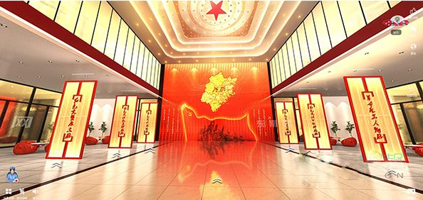

智慧党建云平台
你好,
党员中心
退出登录
登录
搜索
基层党组织建设
当前位置：
首页
>
基层党组织建设
陈 希：培养选拔干部必须突出政治标准
选拔党的干部，毫无疑义要突出政治标准，这是政党的政治属性决定的，是保证政党团结统一、实现政治主张和政治目标的必然要求。
298
0
2019-03-01
黑龙江落实习近平总书记全国两会重要讲话精神纪实
3800万黑龙江干部群众牢记习近平总书记嘱托，历经1000多个日夜的砥砺奋进，在黑土地上交出了“春天的答卷”。
293
0
2019-03-01
江西全面深化改革 一个个“硬骨头”被砸开
2018年，是贯彻落实党的十九大精神的开局之年，是改革开放40周年。在这个具有特殊意义的年份，江西省全面深化改革的车轮滚滚向前，各项改革举措紧跟时代旋律、紧贴发展需求，一幅春潮涌动、风生水起的改革画卷在赣鄱大地跃然呈现。
374
0
2019-03-01
习近平谈“一带一路”建设：不是中国一家的独奏
党的十八大以来，习近平同志围绕社会主义经济建设发表的一系列重要论述，立意高远，内涵丰富，思想深刻，全面回答了我国经济发展怎么看、怎么干的重大问题，具有十分重要的指导意义。
293
0
2019-03-01
王勇：“想着为人民做点事，就没有克服不了的困难”
这位老朋友叫王勇，在铅山县法院工作，现任法院党组成员、纪检组长，他曾获“全国先进工作者”“全国优秀法官”“全国法院人民法庭工作先进个人”“中国好人”等多项荣誉，是一位六级伤残退役军人。
349
0
2019-03-01
明光市：党日活动制度化规范化
安徽省明光市针对“主题党日”重视程度不够、指导性不强、活动形式单一等问题，采取定时间、定主题、定内容、督查指导的“三定一督导”方式，开展“主题党日”活动，推动“主题党日”活动常态化、制度化、规范化，不断提升党的组织生活质量。
291
0
2019-03-01
共产党人的“心学”，常修方能常新
十八届中央纪委六次全会公报指出，党性教育是共产党人的“心学”，是党员正心修身的必修课。
277
0
2019-03-01
“李云龙式”的干部为何受关注？
如何把“李云龙式”干部选出来、用起来、约束好，是各级党政部门强化干部素质能力、推进全面深化改革、破解发展难题的重要任务。
214
0
2019-03-01

红色影片进课堂 让思政课燃起来
习近平总书记在全国高校思想政治工作会议上指出，高校思想政治工作关系高校培养什么样的人、如何培养人以及为谁培养人这个根本问题。
244
0
2019-02-28
河南召开全省组织部长会议 担当作为 狠抓落实
2月18日，河南召开全省组织部长会议，部署2019年组织工作。省委常委、组织部长孔昌生出席会议并讲话。
256
0
2019-02-28
共 31 条
上一页
1
2
3
4
下一页
智慧党建云平台
咨询专线：